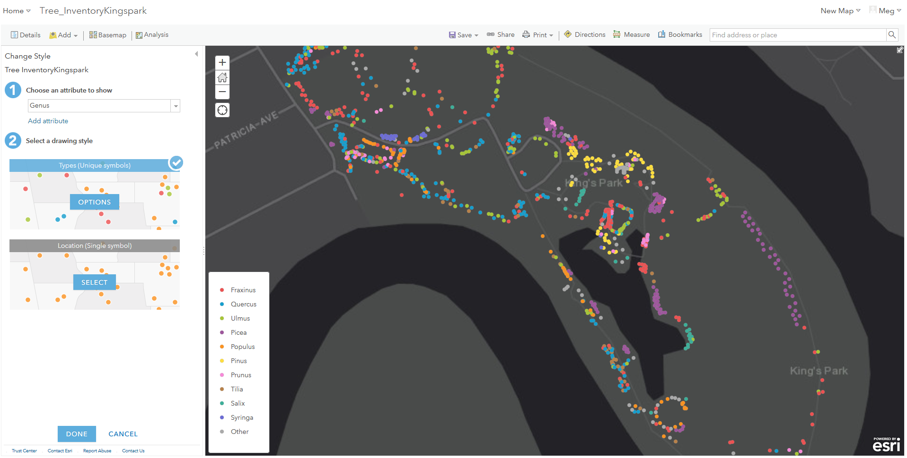

Getting Started:
- What do you have?
- What have others done?
- Make a plan
Data cleaning:
Be critical
If you put lipstick on a pig, it's still a pig
Key Points - Data Storytelling
- Main ‘character’ (one of your data points being impacted by a research question);
- Focus your audience large <-> small;
- Tell people why they should care.
Key Points - StoryMaps
- Exciting cover;
- Structure (each section has Intro, Body, Conclusion);
- Active and passive visuals;
- Cohesive and appropriate choice of font/colour.
Explore content in ArcGIS Online
